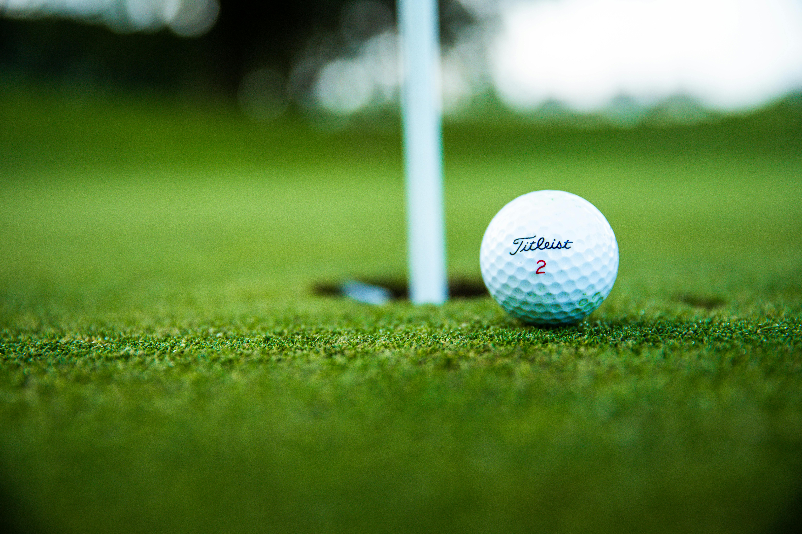
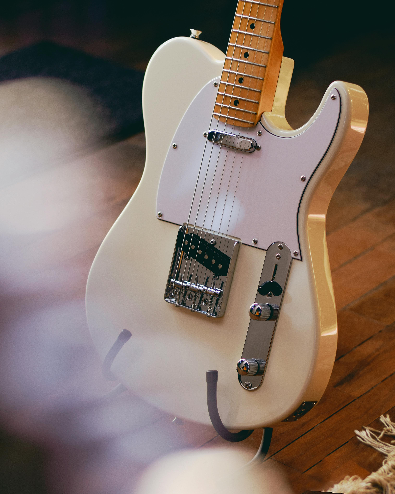
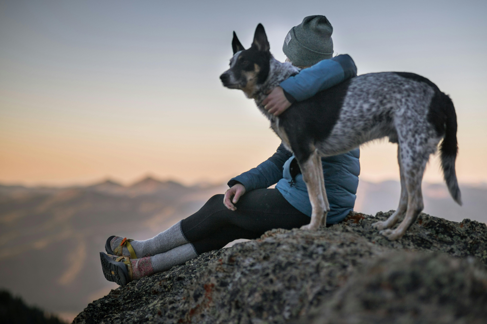

Outside of my coding studies, some of my favorite things to enjoy are:
Golf
I enjoy playing golf because it lets me spend time outdoors, share the game with family and friends, and challenge myself to improve at a sport that’s both difficult and rewarding to master.

Guitar
I love playing electric guitar because it lets me dive into the energy of rock and metal, unleash powerful solos, and crank the volume for a sound that feels alive and electrifying.

My Blue Heeler
I enjoy spending time with my Blue Heeler because of the loyal companionship, playful energy, and the joy that comes from having such a smart and spirited dog by my side.

Notable achievements:
- Completed FBI Special Agent Selection System and received job offer.
- Accepted to USC's Premedical Post-Baccalaureate Program.
- Was VP of our small family business for 12 years.